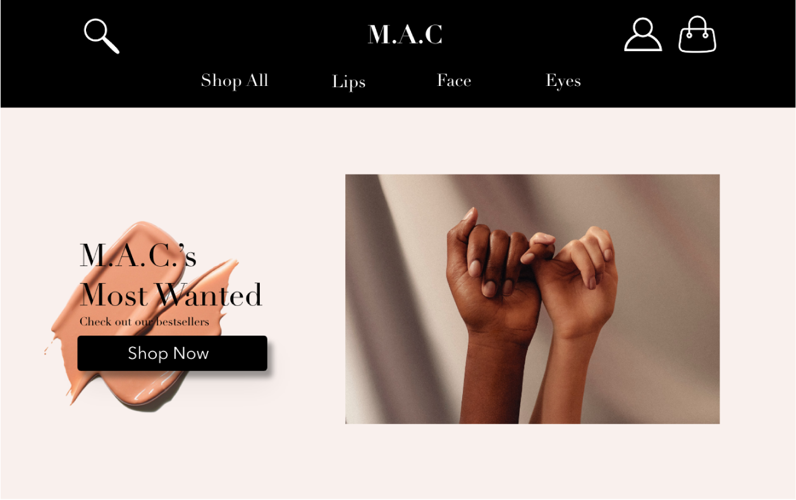
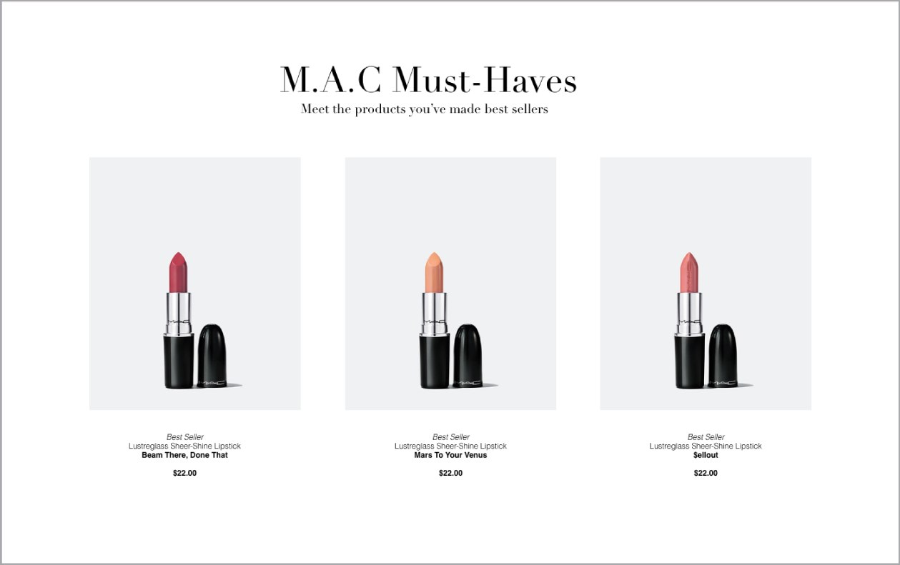
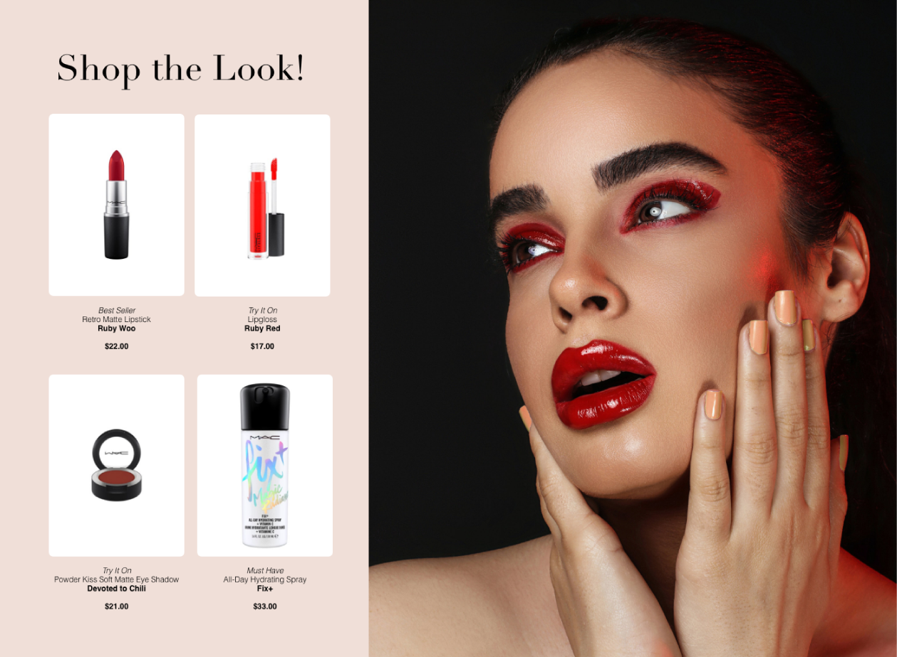
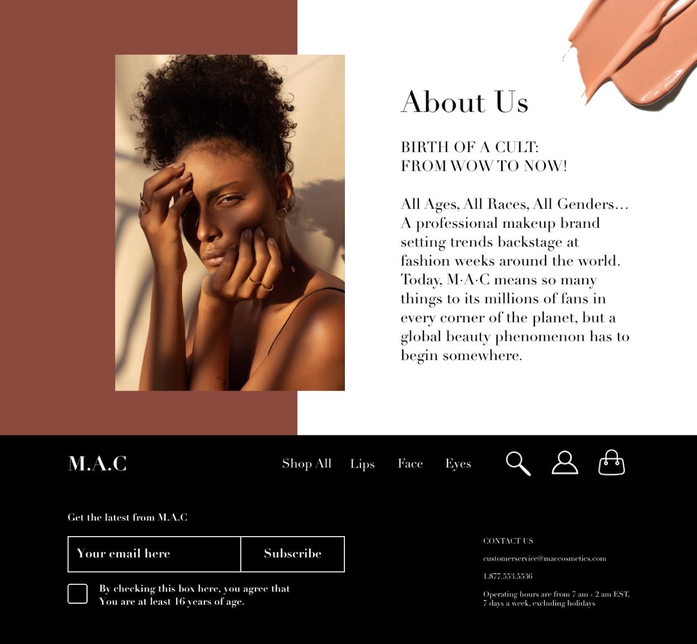
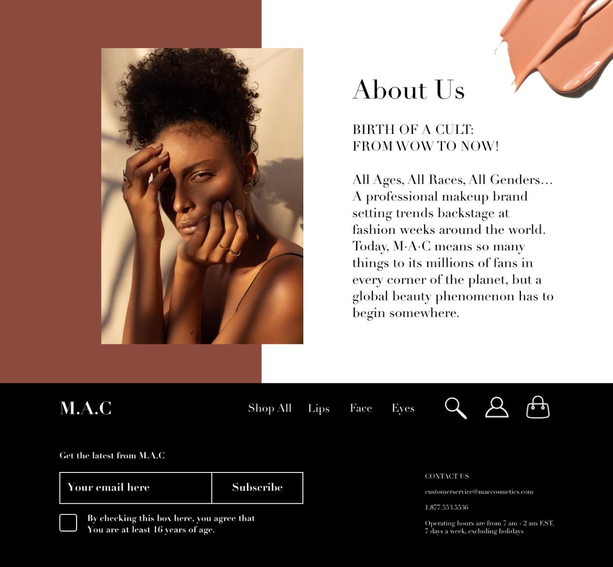

Website Design
The web design project required students to select or invent a product, company, or service and design a unique and visually distinct website for the product. I chose to redesign the website from the makeup company, M.A.C. I felt their current website was visually cluttered, so my goal was to clean and simplify the design, while still marketing their overall message.
   
